Current Affairs — August 2026 · Class 3
Class 3 of the August 2026 monthly series (Ashish Gautam, Adda247) · 22 topics, grouped by exam category.
- Read once with Recall mode off. Hover over (or tap) any dotted name to see its static GK.
- Turn Recall mode on: the key facts are hidden. Say each one before you click to reveal it.
- Take the self-test at the end. Revise again tomorrow, in a week and in a month, using only the Rapid Revision box after that.
1Banking & Finance
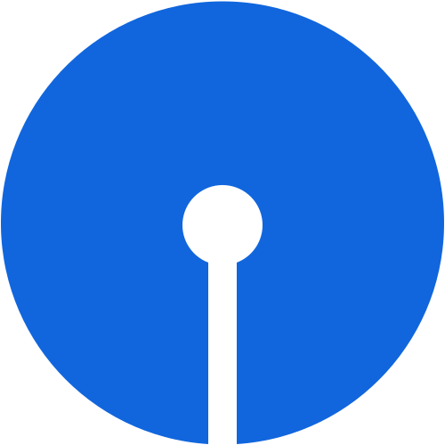
🏦 BankingSBI Reports Highest-Ever Quarterly Profit in Q1FY27
- State Bank of IndiaState Bank of IndiaEstablished 1 July 1955 (successor of the Imperial Bank of India)HQ Mumbai, MaharashtraIndia’s largest public sector bank (SBI) reported its highest-ever quarterly net profit of ₹21,121 crore in Q1 FY 2026-27.
- Net profit increased by 10% year-on-year from ₹19,160 crore in Q1 FY 2025-26.
🏦 BankingIndusInd Bank Gets RBI RBIReserve Bank of IndiaEst. 1 April 1935 (RBI Act 1934)Nationalised 1949HQ Mumbai Approval for Stock Broking Subsidiary
RBIReserve Bank of IndiaEst. 1 April 1935 (RBI Act 1934)Nationalised 1949HQ Mumbai Approval for Stock Broking Subsidiary
- IndusInd Bank has received approval from the Reserve Bank of India (RBI) to set up a wholly owned subsidiary for undertaking stock broking business.
- A stock broking company can provide services such as buying/selling shares, trading platforms, demat-related services, IPO applications and other securities-market services. In return, it may earn brokerage and other permitted charges.
- IndusInd Bank — Founded: April 1994 · Headquarters: Mumbai, Maharashtra · Managing Director and CEO: Rajiv Anand.
2RBI, SEBI, NABARD News
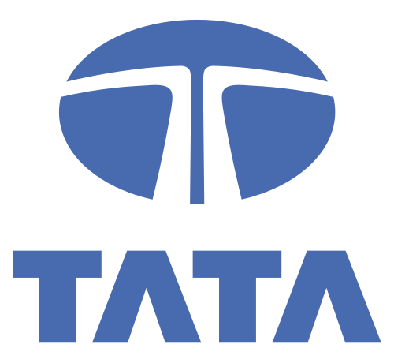
🏦 BankingRBIRBIReserve Bank of IndiaEst. 1 April 1935 (RBI Act 1934)Nationalised 1949HQ Mumbai Retains Tata Sons in Upper-Layer NBFC List
- RBI has included Tata Sons Private Limited among the 17 Upper-Layer NBFCs (NBFC-ULs) identified for 2026–27. Tata Sons will continue to face stricter RBI supervision.
- Under RBI’s Scale-Based RegulationScale-Based RegulationRBI framework for NBFCs, effective 1 October 2022The Top Layer is ideally kept empty; RBI moves an NBFC there only if it sees extreme risk framework, NBFCs are divided into four layers: Base, Middle, Upper and Top.
- The Upper Layer consists of very large and systemically important NBFCs that need enhanced regulation and supervision, because problems in them can have a wider impact on the financial system.
- The UL consists of NBFCs with an asset size of ₹1,00,000 crore and above as per the latest audited balance sheet.
- New entrants: REC Ltd, Power Finance Corporation (PFC), Indian Railway Finance Corporation (IRFC) and HUDCO.
- Removed from the list: PNB Housing Finance Ltd and Sammaan Capital Ltd.
🏦 BankingRBIRBIReserve Bank of IndiaEst. 1 April 1935 (RBI Act 1934)Nationalised 1949HQ Mumbai Plans to Restart Licensing of Urban Co-operative Banks
- RBI plans to restart issuing new licences for Urban Co-operative Banks (UCBs) after a gap of more than two decades.
- RBI stopped issuing fresh UCB licences in 2004.
- Under the proposed guidelines, only an existing Multi-State Credit Co-operative Society (CCS) meeting strict conditions will be eligible to apply.
- On-tap licensing means eligible applicants can submit applications to RBI at any time, unlike the earlier system where applications were invited only during a specific period.
3Rankings & Reports
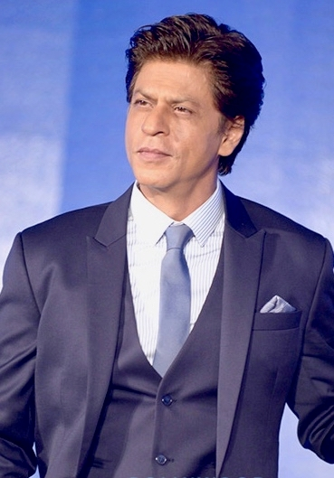
🎯 Likely QShah Rukh Khan Becomes India’s Most Valued Celebrity Brand in 2025
- Bollywood actor Shah Rukh Khan emerged as India’s most valued celebrity brand in 2025, according to the India Celebrity Brand Valuation Report by global financial and risk advisory firm Kroll.
- He moved from third position in 2024 to first in 2025, with an estimated brand value of $177.9 million.
- Combined brand value of India’s Top 25 celebrities: USD 2 billion, a decline of 3.7% compared with the previous year.
4Schemes & Cabinet
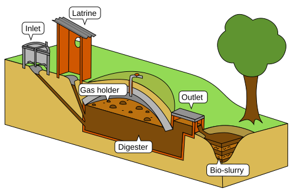
🎯 Likely QCabinet Approves GOBARdhan Scheme
- Union Cabinet approved the GOBARdhan Scheme with a total financial outlay of ₹23,731 crore.
- It will be implemented for 10 years, from 2026–27 to 2035–36.
- GOBARdhan: Galvanizing Organic Bio-Agro Resources Dhan.
- It aims to increase India’s domestic Compressed Biogas (CBG) production nearly tenfold. The government calls it India’s National Circular Bioenergy Scheme.
- Originally launched under the Swachh Bharat Mission (Grameen) in 2018 to convert biodegradable waste into biogas and bio-slurry.
- Implemented by the Ministry of Petroleum and Natural Gas.
5States
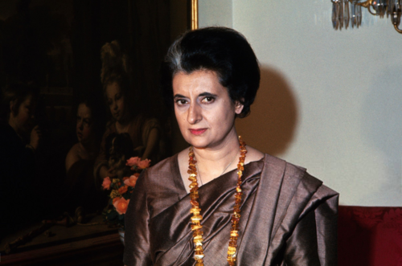
West Bengal Announces ₹10,000 Monthly Pension for Those Jailed during the Emergency
- West Bengal Chief Minister Suvendu Adhikari announced a monthly pension of ₹10,000 for 325 people jailed during the Emergency, along with free travel on government buses and medical assistance.
- Beneficiaries will be recognised as “Loktantra Senani” (Soldiers of Democracy).
- The National EmergencyNational EmergencyArticle 352Proclaimed by President Fakhruddin Ali Ahmed on the ground of “internal disturbance”The 44th Amendment (1978) replaced that ground with “armed rebellion”25 June is observed as Samvidhaan Hatya Diwas of 1975 was proclaimed during the tenure of PM Indira Gandhi and remained in force from 25 June 1975 to 21 March 1977.
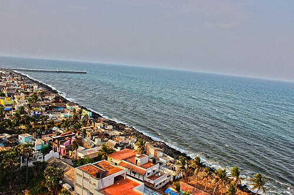
Amit Shah Presents President’s ColourPresident’s ColourAlso called NishanAwarded in the name of the President of India, the Supreme Commander of the Armed Forces to Puducherry Police
- Union Home Minister and Minister of Cooperation Amit Shah presented the President’s Colour to the Puducherry Police for its service, commitment and contribution to internal security.
- The President’s Colour is one of the highest honours given to a military, police or uniformed force of a State or Union Territory.
- On the same occasion he flagged off the ‘Har Ghar Tiranga’ Yatra from Rajiv Gandhi Square, Puducherry.
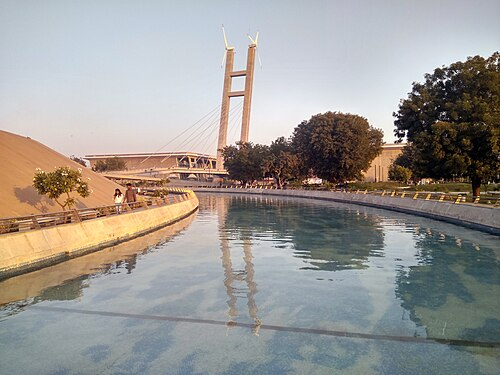
GujaratGujaratCapital GandhinagarChief Minister Bhupendra PatelNational Parks Gir, Velavadar (Blackbuck), Marine NP (Gulf of Kutch) CM Inaugurates Travel and Tourism Fair 2026
- Gujarat CM Bhupendra Patel inaugurated TTF Ahmedabad 2026 at the Mahatma Mandir Convention and Exhibition Centre, Gandhinagar.
- It is primarily a Business-to-Business (B2B) travel trade exhibition where tourism stakeholders meet and build partnerships.
🎯 Likely QOdishaOdishaCapital Bhubaneswar (in Khordha district)National Parks Simlipal, BhitarkanikaRamsar: Chilika Lake (India’s first, 1981) to Open India’s First Rail-Tech Park
- Odisha is set to establish India’s first Rail-Tech Park.
- Location: Sahaspur Industrial Estate, Khordha district.
- Developed by the Odisha Industrial Infrastructure Development Corporation (IDCO).
- A dedicated ecosystem for companies in railway equipment manufacturing, railway components, signalling and safety systems, and track equipment.
6Agriculture & Trade
🎯 Likely QAPEDA Facilitates First-Ever Sea Shipment of GI-tagged Mithila MakhanaMakhanaFox nut, from the plant Euryale feroxBihar grows most of India’s makhanaMithila Makhana received its GI tag in 2022 to Australia
- APEDA facilitated the first-ever commercial sea shipment of GI-tagged Mithila Makhana from Bihar to Australia.
- Sourced from growers in Darbhanga district; shipped from the BIADA Industrial Area in Bihta.
- APEDA is a statutory body under the Ministry of Commerce and Industry, to promote the export and development of agricultural and processed food products.
- APEDA — Formed: 13 February 1986 · Headquarters: New Delhi · Chairman: Abhishek Dev.
7Culture & Campaigns
🎯 Likely QGovernment Launches ‘Har Ghar Tiranga 2026’ Campaign
- Union Minister for Culture and Tourism Gajendra Singh Shekhawat launched the nationwide Har Ghar Tiranga 2026 campaign.
- Held across India and among the Indian diaspora from 9 to 17 August 2026.
- Started in 2022 under Azadi Ka Amrit Mahotsav; the 2026 campaign is its fifth edition.
- Citizens are encouraged to hoist the National FlagNational FlagAdopted by the Constituent Assembly on 22 July 1947Designed by Pingali VenkayyaGoverned by the Flag Code of India, 2002Width : length = 2 : 3 and take part in programmes promoting patriotism, national unity and cultural heritage.
- Organised alongside celebrations of the 150th anniversary of the National Song “Vande Mataram”.
- Vande Mataram: composed by Bankim Chandra Chattopadhyay on 7 November 1875 (Akshaya Navami); became part of his novel Anandamath in 1882; accorded the status of National Song on 24 January 1950.
- New initiative announced: SURYAPATH TIRANGA — a symbolic global relay of the Indian National Flag.
Tourism Ministry and Netflix Celebrate 10 Years of Netflix in India
- The Ministry of Tourism, with the Ministry of Culture and Netflix, held an event marking 10 years of Netflix in India.
- Venue: National Gallery of Modern Art (NGMA), New Delhi.
- The ‘As Seen on Netflix’ section was integrated with the Incredible India digital platform, to help travellers discover real destinations featured in Netflix films and series.
8Governance & Digital

🎯 Likely QMoPR Launches ‘DAANVEER’ to Strengthen Digital Infrastructure in Gram Panchayats
- The Ministry of Panchayati RajPanchayati RajConstitutional status by the 73rd Amendment Act, 1992 (Part IX)National Panchayati Raj Day: 24 April launched the “DAANVEER” initiative from New Delhi, to strengthen digital infrastructure in Gram Panchayats through voluntary citizen participation.
- Launched by Vivek Bharadwaj, Secretary, Ministry of Panchayati Raj.
- Aims to bridge the shortage of computers in Gram Panchayats and improve digital governance at the grassroots.
- Donations through the “Meri Panchayat” mobile app.
- Developed with the National Informatics Centre (NIC) and DigiHaat; DigiHaat is the digital marketplace from which donors select approved computer bundles.
9International
🎯 Likely QPakistan, Saudi Arabia, Türkiye Ink Defence Deal
- Pakistan, Saudi Arabia and Türkiye signed a Joint Defence Agreement in Mecca, Saudi Arabia, called the Mecca Joint Defence Agreement.
- Principles: Collective Defence, Collective Deterrence, Collective Security.
- Key provision: an armed attack on any one of the three will be treated as an attack on all three.
- Signed during the Mecca Al-Mukarramah Summit for Joint Defence.
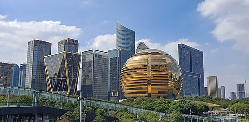
Typhoon Dolphin Hits Eastern China
- Typhoon Dolphin made landfall on the eastern coast of China, disrupting air travel and forcing large-scale evacuations.
- Landfall near Yuhuan in Zhejiang province.
- It had already swept through Japan’s southern Okinawa prefecture.
10Appointments & Extensions
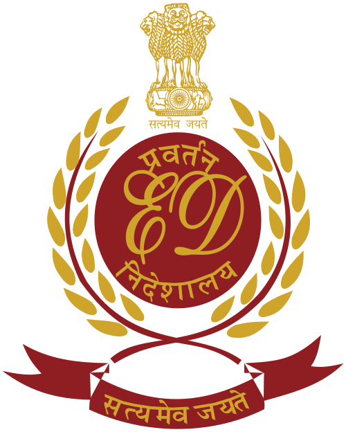
🎯 Likely QED Director Rahul Navin Gets One-Year Extension
- The Central Government extended the tenure of Enforcement Directorate (ED) Director Rahul Navin by one year.
- Up to 31 July 2027 or until further orders, whichever is earlier.
- ED — Founded: 1 May 1956 · HQ: New Delhi · A financial investigation agency under the Department of Revenue, Ministry of Finance.
- It investigates offences under the PMLA, 2002, FEMA, 1999 and the Fugitive Economic Offenders Act, 2018.
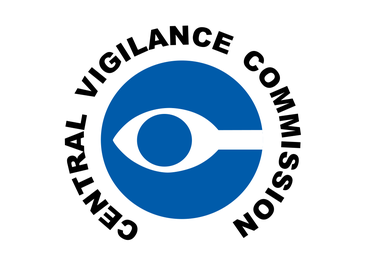
🎯 Likely QA S Rajeev Assumes Charge as Acting Central Vigilance Commissioner
- A.S. Rajeev has taken charge as the Acting Central Vigilance Commissioner (CVCCVCSet up in 1964 on the recommendation of the Santhanam CommitteeBecame statutory in 2003).
- He succeeds Praveen Kumar Srivastava, whose tenure has ended.
- CVC is India’s apex vigilance institution for preventing corruption in Central Government administration; it monitors vigilance administration and promotes anti-corruption measures.
- A statutory body under the Central Vigilance Commission Act, 2003.
- Composition: 1 Central Vigilance Commissioner + maximum 2 Vigilance Commissioners. Term: 4 years or until age 65, whichever is earlier.
- Appointed by the President on the recommendation of a committee headed by the Prime Minister, with the Union Home Minister and the Leader of the Opposition in Lok Sabha.
Alexander George Appointed Muthoot Finance Managing Director
- Alexander George is the new Managing Director of Muthoot Finance Limited.
- He replaced George Alexander Muthoot, who will become Executive Vice Chairman.
- Muthoot Finance — Founded: 1939 · HQ: Kochi, Kerala.
Satyajit Mohanty Appointed Representative of India in ICAOICAOUN specialised agency set up by the Chicago Convention (1944)HQ Montreal, CanadaInternational Civil Aviation Day: 7 December
- Satyajit Mohanty is the new Representative of India on the Council of the International Civil Aviation Organization (ICAO).
- He is currently Joint Secretary, Ministry of Defence. Tenure: 3 years.
- Rahul Jain, Joint Secretary in the Ministry of Corporate Affairs, named Senior Adviser to the Executive Director (India), IMF
 IMFInternational Monetary FundEst. 22 July 1944HQ Washington, D.C.191 members (191st: Liechtenstein)Publishes the World Economic Outlook, Washington DC, for three years.
IMFInternational Monetary FundEst. 22 July 1944HQ Washington, D.C.191 members (191st: Liechtenstein)Publishes the World Economic Outlook, Washington DC, for three years.
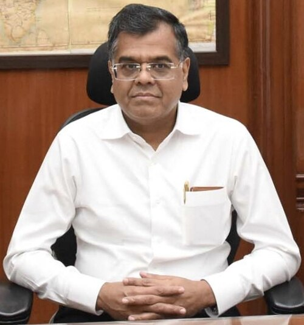
Cabinet Secretary Somanathan, Home Secretary Mohan Get One-Year Extension
- The Appointments Committee of the Cabinet (ACCACCChaired by the Prime Minister; the other member is the Home MinisterThe Cabinet Secretary is the senior-most civil servant and heads the Cabinet Secretariat) approved a one-year extension for Cabinet Secretary T. V. Somanathan and Union Home Secretary Govind Mohan.
🎯 Likely QTewolde Gebremariam Appointed Air IndiaAir IndiaOwned by the Tata Group since January 2022Founded as Tata Airlines by J.R.D. Tata in 1932’s New CEO and MD
- Air India appointed Tewolde Gebremariam, former CEO of Ethiopian Airlines Group, as its new CEO and Managing Director.
- He will succeed Campbell Wilson.
11Self-test
Answer out loud first, then click to check. Re-test the ones you missed tomorrow.
SBI’s Q1 FY27 net profit, and the YoY growth?
₹21,121 crore; 10% (from ₹19,160 crore)
Which bank got RBI approval for a wholly owned stock broking subsidiary?
IndusInd Bank (MD & CEO Rajiv Anand)
How many NBFC-ULs for 2026–27, and the asset-size threshold?
17; ₹1,00,000 crore and above
The four new Upper-Layer NBFCs?
REC, PFC, IRFC, HUDCO
Since when has RBI not issued fresh UCB licences?
2004
Who can apply for the new UCB licences?
An existing Multi-State Credit Co-operative Society (CCS)
India’s most valued celebrity brand 2025, and the report’s publisher?
Shah Rukh Khan ($177.9 mn); Kroll
GOBARdhan Scheme outlay, period and implementing ministry?
₹23,731 crore; 2026–27 to 2035–36; Petroleum & Natural Gas
Title given to Emergency detainees in West Bengal?
Loktantra Senani (₹10,000/month, 325 people)
Where was TTF Ahmedabad 2026 held?
Mahatma Mandir, Gandhinagar
India’s first Rail-Tech Park — location and developer?
Sahaspur Industrial Estate, Khordha (Odisha); IDCO
Mithila Makhana’s first sea shipment — destination and dispatch point?
Australia; BIADA Industrial Area, Bihta
Har Ghar Tiranga 2026 — dates and edition?
9–17 August 2026; 5th edition
Name of the global flag relay announced with Har Ghar Tiranga?
SURYAPATH TIRANGA
DAANVEER donations are made through which app?
Meri Panchayat (bundles on DigiHaat, with NIC)
Where was the Pakistan–Saudi–Türkiye defence agreement signed?
Mecca (Mecca Joint Defence Agreement)
ED Director’s extended tenure runs until?
31 July 2027 (Rahul Navin)
Acting CVC, and whom did he succeed?
A.S. Rajeev; Praveen Kumar Srivastava
India’s new Representative on the ICAO Council?
Satyajit Mohanty (3 years)
Air India’s new CEO & MD?
Tewolde Gebremariam (ex-Ethiopian Airlines), succeeding Campbell Wilson
⚡ Rapid Revision
- SBI Q1FY27 ₹21,121 cr (+10%) · IndusInd stock-broking subsidiary (RBI nod).
- NBFC-UL 2026–27: 17 incl. Tata Sons · ₹1 lakh cr+ · new REC, PFC, IRFC, HUDCO · out PNB Housing, Sammaan Capital.
- UCB licences to restart (stopped 2004), on-tap, only Multi-State CCS.
- SRK top celebrity brand 2025, $177.9 mn (Kroll) · Top-25 ≈ $2 bn, −3.7%.
- GOBARdhan ₹23,731 cr, 2026–36, CBG ×10, MoPNG · launched 2018 under SBM-G.
- WB: ₹10,000 pension, 325 “Loktantra Senani” · Emergency 25 Jun 1975 – 21 Mar 1977.
- President’s Colour → Puducherry Police (Amit Shah) · TTF Ahmedabad at Mahatma Mandir · Rail-Tech Park: Khordha (IDCO).
- Mithila Makhana: first sea shipment Bihar → Australia (APEDA, Darbhanga, Bihta).
- Har Ghar Tiranga 9–17 Aug, 5th edition · Vande Mataram 150 yrs · SURYAPATH TIRANGA relay.
- DAANVEER (MoPR): computers for GPs via Meri Panchayat + DigiHaat + NIC · Netflix 10 yrs: “As Seen on Netflix”.
- Mecca Joint Defence Agreement: Pakistan + Saudi + Türkiye · Typhoon Dolphin → Yuhuan, Zhejiang.
- Extensions: ED Rahul Navin (to 31 Jul 2027), Cab Sec Somanathan, Home Sec Govind Mohan · Acting CVC A.S. Rajeev.
- Muthoot MD Alexander George · ICAO Satyajit Mohanty · IMF adviser Rahul Jain · Air India CEO Tewolde Gebremariam.
End of August 2026 · Class 3